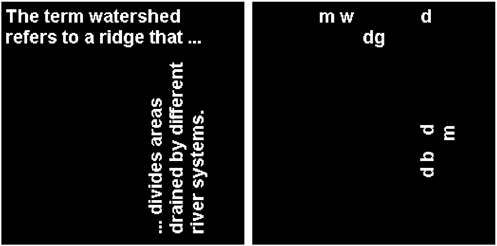

Vector where each element contains the linear indices of the pixels in each object
centroid
A Float64 Matrix with the x,y coordinates of the centroids for each component
area
A vector of Float64 with the areas of each component
obj2keep — Objects to keep
Objects to keep, specified as one of these values:
Positive integer or vector of positive integers — Keep the object or objects whose index is included in obj2keep. The length of obj2keep is less than or equal to CC.num_objects.
Logical vector — Keep the objects whose corresponding element in obj2keep is true. The length of obj2keep must be equal to CC.num_objects.
Output Arguments
BW — Binary image
A new GMTimage, returned as a logical array of the same size as CC.image_size.
Examples
Keep Largest Connected Components
Read a binary image and detect the connected components:
Create a binary image that contains only the 2nd through 10th largest connected components:
usingGMTI =gmtread(TESTSDIR *"assets/text.png"); # HideCC =bwconncomp(I); # Hide# Sort by area in descending orderidx =sortperm(CC.area, rev=true);Ifilt =cc2bw(CC, obj2keep=idx[2:10])grdimage(I, figsize=6)grdimage!(Ifilt, figsize=6, xshift=6.2, show=true)

Select Connected Components Based on Multiple Criteria
Read a grayscale image of grains of rice, then convert the image to binary:
I =gmtread(TESTSDIR *"assets/rice.png");BW =binarize(I);imshow(BW)
Select regions for whom these conditions apply: - The area is greater than 50 pixels - The bounding box is less than 15 pixels wide and is greater than or equal to 20 pixels tall
This example uses the filter function to get the indices of the connected components that satisfy these criteria. The ind2bool function is used to convert the vector of indices returned by filter into into a vector of Boolean that can be combined with the area andition and te result passed to cc2bw.
This example also shows a problem with the bwconncomp function when the BoundingBoxes of components overlap. In such cases it may happen that parts of one component are included in the another component. This can lead to wrong results in some areas (as can be seen with the help of the red rectangles drawn around each component).